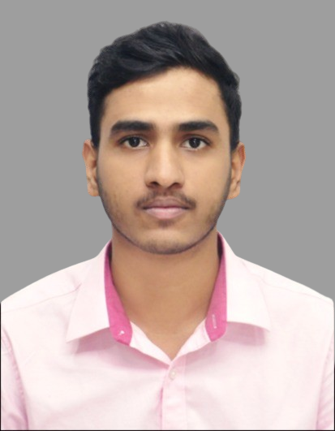

Solar PV professional transitioning into energy systems and grid integration. Currently pursuing M.Sc. Sustainable Energy Systems at TU Dortmund. Seeking a Werkstudent or internship role in the electrification and energy transition sector.

Solar PV professional transitioning into energy systems and grid integration, with hands-on experience managing 100 kW+ renewable installations and technical project execution. Proven track record in data-driven system optimization, inverter and grid-tied system commissioning, stakeholder coordination, and cross-functional team leadership.
Currently pursuing my M.Sc. Sustainable Energy Systems at TU Dortmund to expand expertise from technical operations into energy markets and commercial optimization.
Seeking an internship or working student role in the electrification and energy transition sector to apply technical and analytical expertise to real-world challenges.
If your team is hiring a Werkstudent or intern, or you'd simply like to talk about the energy transition, I'd love to hear from you.